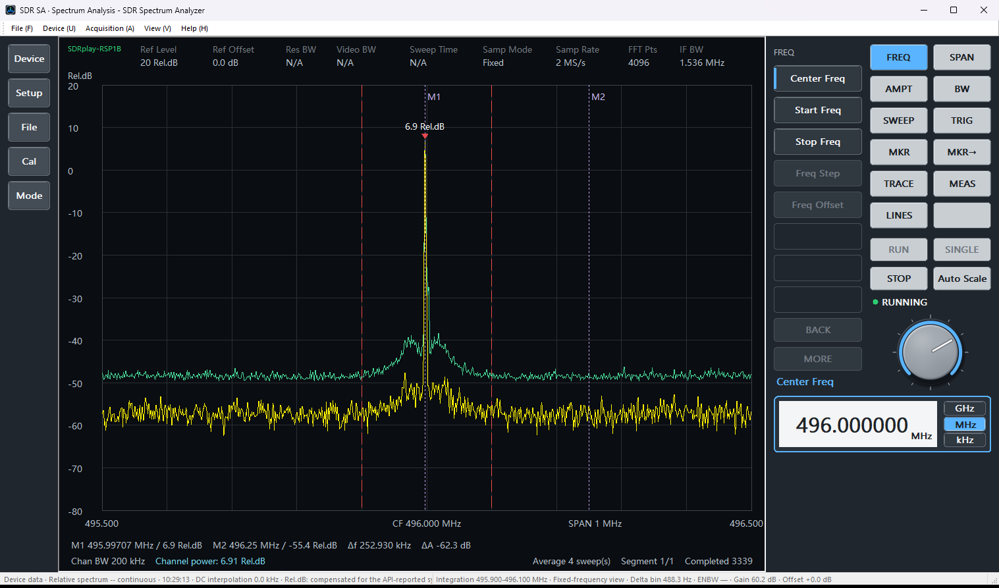
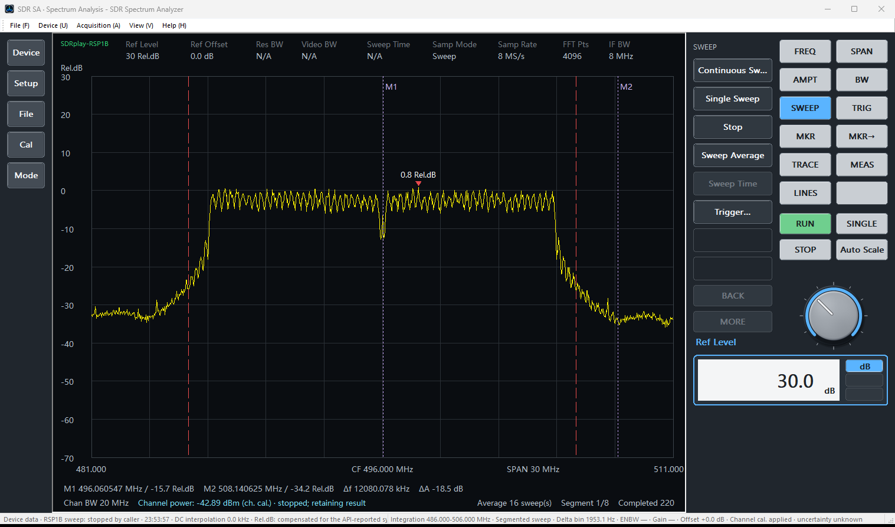
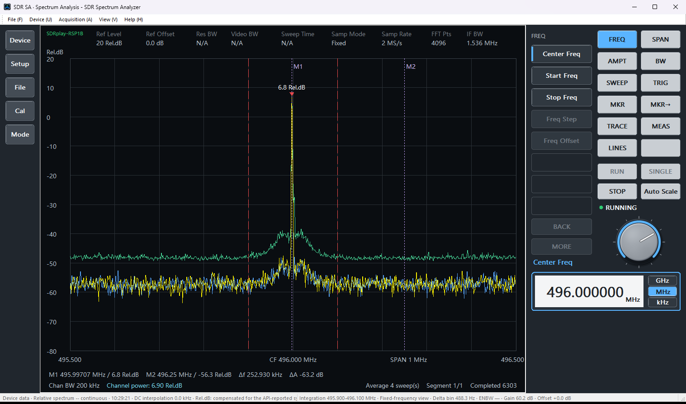
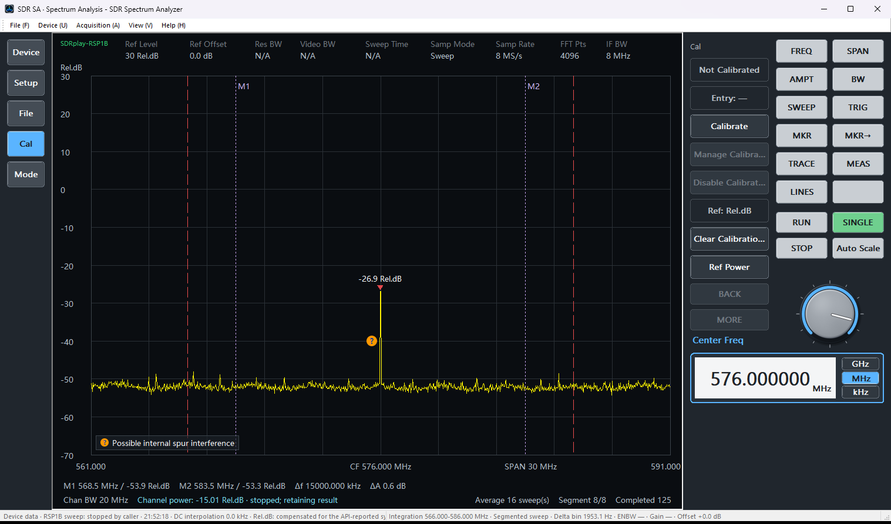

SDR Spectrum Analyzer 用户指南
产品： SDR Spectrum Analyzer 发布者： Mattino 507 Software 版本： 1.2 最后更新： 2026 年 11 月
1. 简介
SDR Spectrum Analyzer 是一款 Windows 桌面应用，用于通过受支持的 USB 软件定义无线电（SDR）硬件查看和分析 RF 频谱数据。1.2 版支持两类设备：
- RTL-SDR：已测试的基于 RTL2838、配 R820T 系列调谐器的接收机。
- SDRplay RSP1B：RSP1B 接收机，通过您另行安装的 SDRplay API 使用。
应用以定频模式（一个调谐频率）或扫描模式（分段扫描）显示频域迹线，并提供标记、信道功率、信道功率校准流程、配置文件、PNG 截图和 CSV 导出。可以使用哪些功能，取决于版本（参见免费版与完整版）和所连接的设备。
它是一款频谱可视化与分析应用，不是通用无线电接收或音频解调应用。
本指南结构
第 1-7 节介绍产品、两个版本、安装、主窗口和控制面板。第 8-15 节是分步操作；初次使用本应用时，请从测量连续波信号开始。第 16 节以完整操作树列出控制面板的每个按键。第 17-31 节是参考章节，最后是逐条说明各提示消息的故障排查表。第 32 节介绍如何获取支持，第 33 节说明隐私、许可和第三方组件。
2. 测量范围和重要限制
电平刻度取决于设备和校准：
| 单位 | 何时显示 | 含义 |
|---|---|---|
| dBFS | RTL-SDR 设备数据 | 相对于 ADC 数字满量程的分贝。0 dBFS 是可表示的最大电平；过于接近 0 dBFS 可能导致削波并使频谱失真。 |
| Rel.dB | RSP1B 设备数据 | 相对电平：数字功率减去 SDRplay API 报告的系统增益，折算到接收机输入端。因此改变增益衰减或 LNA 状态时，同一信号的读数基本不变。它既不是 dBFS，也不是 dBm。 |
| Raw Rel.dB | RSP1B 无法得到可信的系统增益时，或在 8 MS/s 下系统增益低于 15 dB 时 | 未经系统增益修正的数字电平。它不能与 Rel.dB 比较，也不会显示为 dBm。 |
| dBm | 仅当有匹配的校准生效时（参见校准） | 根据您自己的参考测量得出的绝对电平，只对进行该测量时的设置有效。 |
显示数值取决于接收机、所选增益、频率、采样率、中频带宽、电缆、衰减器以及 RF 环境。本应用中的校准只适用于进行校准时的确切条件，并非通用设备校准。请勿将 SDR Spectrum Analyzer 视为已校准的实验室级频谱分析仪、精密功率计，或具有绝对 dBm 准确度保证的产品。
RSP1B 本身可能在 24 MHz 的某些整数倍频点上产生窄的内部谱线。当可见峰值落在这类频点上时，图上会在其旁边标出一个带蓝色"?"的橙色圆点，并显示图例此频点可能受内部杂散影响（英文界面为 Possible internal spur interference）。该标记只表示该频点可能受影响，并不说明该峰值就是杂散；没有标记也不代表该频点没有这类谱线。
在 RSP1B 上，强信号还可能在关于某个调谐中心对称的频率上产生较弱的镜像（IQ 镜像）。当某个可见峰值很可能是更强峰值的镜像时，图上会在该峰值正上方标出一个浅蓝色空心小椭圆（内有两条白色短斜线），并显示图例疑似 IQ 镜像（英文界面为 Suspected IQ Image）。该标记仅用于显示，不改变迹线、信道功率或 CSV 数据。它只表示该峰值可能是镜像，并不是对镜像电平的测量；没有标记也不代表不存在镜像。在扫描模式下，同一个强信号可能有多个被标记的镜像，因为包含该信号的每个分段都有各自的调谐中心。
3. 免费版与完整版
SDR Spectrum Analyzer 提供两个版本：免费版和完整版。两者是同一个已安装的应用，而不是两次单独的安装。一台电脑上启用哪个版本，取决于该电脑上登录 Microsoft Store 的 Microsoft 账户所持有的 Store 授权（参见下文的购买或恢复完整版）。
免费版没有时间限制、没有试用期，也没有使用次数限制，不会到期。完整版通过 Microsoft Store 一次性购买，没有订阅。它解锁更多参数设置和测量功能；这些功能在所连接接收机的能力、允许的数值、采集状态以及 1.2 版已实现功能的范围内可用。
在免费版中，每种受支持的接收机都使用固定的采集和显示参数组合进行测量：您可以设置中心频率，在 RSP1B 上还可以选择中频带宽。下表列出了两个版本的主要功能差异。接收机配置与测量限制说明这一固定参数组合对测量意味着什么，完整操作树给出每个按键的可用性。
| 设置或功能 | 免费版，RTL-SDR | 免费版，RSP1B | 完整版 |
|---|---|---|---|
| 中心频率 | 可调，24–1766 MHz | 可调，1 kHz–2 GHz | 可调（设备范围） |
| 频宽 | 固定 1.400 MHz | 固定 1.400 MHz | 可调 |
| 采集模式 | 定频模式 | 定频模式 | 定频模式或扫描模式 |
| 采样率 | 2.048 MS/s | 2.000 MS/s | RTL：1.024、2.048 或 2.4 MS/s；RSP1B：2 或 8 MS/s |
| FFT 点数 | 1024 | 1024 | 1024 至 16384 |
| 窗函数 | Hann | Hann | Hann 或 Blackman-Harris |
| 扫描平均 | 4 | 4 | 1、4、8、16 或 32 |
| 增益 | 调谐器增益 0 dB | 增益衰减 40 dB、LNA 状态 2、最小增益衰减 20 dB | 可调 |
| 中频带宽 | 不适用 | 可在 1.536、5、6、7、8 MHz 中选择 | RSP1B：0.2、0.3、0.6、1.536、5、6、7 或 8 MHz |
| 频率校正（PPM） | 0 | 0 | -200 至 +200 |
| 参考电平 / 每格 dB / 路径偏移 | 0 / 10 dB / 0 dB | 0 / 10 dB / 0 dB | 可调 |
| 标记、信道功率、信道功率校准 | 不可用 | 不可用 | 可用 |
| 最大保持、冻结参考、自动刻度、导出 CSV | 不可用 | 不可用 | 可用 |
两个版本都包含：设备选择和连接、实时迹线、演示数据、配置文件、PNG 截图以及控制面板语言。本指南其余部分只在需要完整版的功能处加一句简短说明。
配置文件。用完整版保存的配置文件可以在免费版中加载。此时，免费版中不能修改的设置会被设为免费版固定参数组合中的数值，其余设置从文件中读取。这是正常行为：并不表示文件损坏，文件本身也不会被改动。在 RSP1B 上，如果文件中的中频带宽不适合固定的 1.400 MHz 频宽，加载会被拒绝（参见接收机配置与测量限制）。
演示数据是一种数据源，不是升级。选择演示数据只改变所显示数据的来源，不会解锁或升级任何完整版功能。
购买或恢复完整版。两种情况都使用帮助 → 购买或恢复完整版...。如果该电脑上登录的 Microsoft 账户尚未拥有完整版，该命令会打开 Microsoft Store 的购买页面。在另一台电脑上，如果 Store 登录的是已经拥有完整版的账户，同一命令会恢复完整版，无需再次付费。不需要另外下载。价格由 Microsoft Store 按您所在区域显示，应用自身不保存任何价格。参见菜单参考。
该命令会显示当前状态：免费版中为购买或恢复完整版...；检查授权时为正在检查完整版...；Microsoft Store 购买窗口打开期间为正在购买完整版...；无法连接 Microsoft Store 时为重试 Microsoft Store...（选择它可再次检查授权）；完整版已生效时为完整版，不可选择。打开 Microsoft Store 之前，应用会显示 Microsoft Store 返回的价格，并请您确认。
如果您已经购买完整版，但某台电脑上完整版功能仍不可用：
- 在该电脑上，使用完成购买的 Microsoft 账户登录 Microsoft Store。
- 从 Microsoft Store 安装并启动 SDR Spectrum Analyzer。
- 选择帮助 → 购买或恢复完整版...。如果 Microsoft Store 提示该账户已经拥有完整版，则无需再次购买。如果该命令显示为重试 Microsoft Store...，请先选择它；它会再次检查授权。
- 返回应用。Store 交互结束后，应用会立即再次检查完整版授权。
- 如果完整版功能仍不可用，请关闭并重新启动应用；应用会在启动时再次检查授权。
版本切换时。应用中没有手动切换版本的命令。版本由 Microsoft Store 授权检查决定；检查在启动时、每次在 Microsoft Store 中购买或恢复之后，以及 Windows 报告授权变化时进行，结果显示在状态栏和输出与诊断中。如果无法连接 Microsoft Store，应用会保持启动时的版本（免费版），直到之后的检查成功。完整版生效时，完整版的按键变为可用，RSP1B 的增益设置恢复为默认值，其它设置保持当前值，两个标记放到中心频率 ± 频宽/4 处。如果当时正在采集，显示的迹线会被清除且不再更新；请按【停止】键，再按【运行】键。免费版生效时（例如 Store 中登录的是没有完整版的 Microsoft 账户），正在进行的采集会停止，显示的迹线会被清除，设置会改为免费版的固定参数组合；所选的中频带宽保持不变。
完整版授权属于您的 Microsoft 账户，而不是某一台电脑。在刚设置好的电脑上，Windows 可能尚未在这台电脑上完成购买授权的同步。Store 交互和重新启动都不能强制完成同步，只是让应用再检查一次。如果此时状态栏显示Microsoft Store 授权：在当前登录的 Microsoft Store 账户下未找到完整版购买记录。，表示应用此刻在这台电脑上没有找到该账户的授权，并不表示这笔购买不存在。请确认 Store 登录的是完成购买的账户，稍等一段时间后再试。
4. 系统和硬件要求
- Windows：应用运行于 Windows 桌面电脑，要求 Windows 10 2004 版或更高版本。
- RTL-SDR：已测试的 RTL2838 USB SDR 硬件（VID:PID
0BDA:2838），配 R820T 系列调谐器，且设备 Interface 0（MI_00）上有可用的 Microsoft WinUSB 绑定。仅声明这一已测试路径；不声明兼容所有 RTL-SDR 设备、RTL2832U 设备、克隆设备或其他调谐器系列。 - SDRplay RSP1B：RSP1B 接收机，且电脑上已安装 SDRplay API。应用使用 SDRplay 提供的 API，但不包含、也不安装它。
| RTL-SDR | RSP1B | |
|---|---|---|
| 调谐范围 | 24–1766 MHz | 1 kHz–2 GHz |
| 采样率 | 1.024、2.048、2.4 MS/s | 2、8 MS/s |
| 中频带宽 | 不适用 | 0.2、0.3、0.6、1.536、5、6、7、8 MHz |
| 增益控件 | 调谐器增益 0–50 dB | LNA 状态、增益衰减、最小增益衰减 |
| 电平单位 | dBFS | Rel.dB |
5. 安装
请使用为所选发布渠道提供的发行安装包安装 SDR Spectrum Analyzer。
应用安装与接收机驱动准备是相互独立的。应用不会安装、下载、更新、替换或以其他方式修改驱动或 SDRplay API。
- RTL-SDR：设备必须先具备所需的 Windows 驱动配置（Interface 0 上的 WinUSB），应用才能访问它。生产 WinUSB 签名和分发架构仍受 Microsoft 指导约束；本指南特意不提供驱动下载、证书、测试模式、Zadig 或恢复流程。
- RSP1B：连接 RSP1B 之前，请先从 SDRplay 安装 SDRplay API。应用会自动找到已安装的 API。
6. 主窗口概览

主窗口包含以下区域：
- 菜单栏：文件、设备、采集、视图和帮助（参见菜单参考）。
- 控制面板：仿照台式频谱分析仪的按键面板，几乎所有设置都在这里完成。系统键【设备】、【设置】、【文件】、【校准】和【模式】位于频谱左侧；软键、硬键、虚拟旋钮、参数读数和单位键位于右侧（参见控制面板基础）。
- 频谱显示：顶部的信息栏（设备、Ref Level、Samp Mode、Samp Rate、FFT Pts、IF BW 等数值）、迹线、频率和电平坐标轴、红色峰值读数、标记线和读数、信道功率范围和读数，以及内部杂散标记。
- 属性：当前设置的只读总览，按频率、采集、幅度、显示与标记、设备与高级分组，并简要说明每个数值在哪里修改。可通过视图 → 属性显示或隐藏。
- 输出与诊断：带时间戳的面向用户的消息。应用启动时该窗格处于隐藏状态；可通过视图 → 输出与诊断显示它。
- 状态栏：左侧显示最新消息或采集进度，右侧显示频谱上下文。
各窗格可以停靠。视图 → 恢复默认布局会恢复默认的停靠布局，并再次隐藏输出与诊断。
本指南的截图均取自英文界面；在中文 Windows 中，界面以中文显示。完整操作树列出每个控制面板按键的中文名称，括号内为英文界面上的名称。
7. 控制面板基础
控制面板的用法类似台式频谱分析仪的前面板。下面的所有操作都可以用鼠标完成；控制面板获得焦点时，也可以用键盘输入数值。
本指南中按键的写法。用【】括起的名称，例如【频率】或【中心频率】，表示控制面板上的按键，名称与按键上的标签一致。菜单栏中的菜单命令用粗体表示，菜单层级之间用 → 分隔，例如帮助 → 使用说明。电脑键盘上的按键也用粗体表示，例如 Shift。
按键。
- 硬键位置固定，用于选择功能区：【频率】（FREQ）、【频宽】（SPAN）、【幅度】（AMPT）、【带宽】（BW）、【扫描】（SWEEP）、【触发】（TRIG）、【标记】（MKR）、【标记→】（MKR→）、【迹线】（TRACE）、【测量】（MEAS）和【线】（LINES）。位于频谱左侧的系统键【设备】（Device）、【设置】（Setup）、【文件】（File）、【校准】（Cal）和【模式】（Mode）用法相同。
- 软键是一列最多 8 个的按键，其标签随所选功能区而变化。打开子页的软键（例如【标记选择】或【前端...】）会把这一列换成该子页。
- 【返回】（BACK）回到上一页。若同一功能区还有下一页，【更多】（MORE）显示该页；【幅度】有第二页，其中是【路径偏移】。
- 【运行】（RUN）、【单次】（SINGLE）、【停止】（STOP）和【自动刻度】（Auto Scale）是功能区按键旁边的硬键，始终显示。
活动参数。按下参数软键（例如【中心频率】）后，它成为活动参数：其名称显示在读数上方，数值显示在读数框中。此后，直接输入、虚拟旋钮和鼠标滚轮都作用于这个参数。按【频率】、【频宽】或【幅度】键也会使该功能区的第一个参数成为活动参数（【中心频率】、【频宽】或【参考电平】）。
直接输入数值。
- 先使该参数成为活动参数。
- 用数字键、小数点输入数值；对允许负值的参数，还可以输入负号。
- 用单位键或【确认】（Enter）结束输入。
单位键取决于参数：
| 参数类型 | 单位键 | 确认表示 |
|---|---|---|
| 频率（中心、起始、终止、频宽、标记频率、信道带宽）、采样率、中频带宽 | 【GHz】、【MHz】、【kHz】（没有 Hz 键） | MHz |
| 电平（参考电平、刻度 / 每格 dB、路径偏移、增益衰减） | 【dB】 | dB |
| 参考功率 | 【dBm】，以及用于清除数值的【取消设置】（Unset） | dBm |
| PPM 及其他列表数值 | 只有【确认】 | 按输入的数值 |
在键盘上，G、M、K 分别等同于【GHz】、【MHz】、【kHz】；Backspace 和 Delete 编辑输入，Esc 取消，Enter 确认。输入的数值在结束输入后才生效。
虚拟旋钮和鼠标滚轮。虚拟旋钮是控制面板上的圆形控件。它按步长逐步修改活动参数，每一步都立即生效：
- 沿圆周拖动虚拟旋钮。每转动 15 度为一步；顺时针增大数值，逆时针减小数值。
- 用鼠标滚轮转动虚拟旋钮。鼠标指针位于控制面板或频谱图上方时，滚轮每滚动一格，虚拟旋钮就转动一步：向前滚动（远离自己）增大数值，向后滚动减小数值。
每一步的大小取决于参数：
| 参数 | 每一步 |
|---|---|
| 中心频率 | 所显示频宽的 1/32 |
| 起始频率、终止频率 | 所显示频宽的 1/16 |
| 标记频率 | 所显示频宽的 1/64 |
| 频宽、信道带宽、刻度 / 每格 dB | 1-2-5 序列中的下一个值 |
| 参考电平、参考功率 | 1 dB |
| 路径偏移 | 0.1 dB |
| 增益衰减 | 1 dB |
| PPM | 1 |
| 列表参数（采样率、中频带宽、FFT 点数、窗函数、扫描平均、LNA 状态、最小增益衰减、调谐器增益、选择设备） | 下一个允许值 |
修饰键。转动虚拟旋钮或滚动鼠标滚轮时，按住 Shift 步长为十分之一，按住 Ctrl 步长为十倍。修饰键不改变 1-2-5 序列和列表参数的步进；增益衰减和 PPM 的步长不会小于一个单位。会超出允许范围的步进会停在极限处，反馈区显示已到极限。
从列表中选择。对列表参数，单击读数框打开允许值列表，再单击其中一个数值。也可以用虚拟旋钮或鼠标滚轮在列表中逐项步进，或输入列表中的某个数值后按【确认】。
反馈区。输入被拒绝时，读数下方的反馈区会说明原因（例如超出范围、请先停止采集，或来自设备规则的提示），原数值保持不变。单击反馈区可查看全文；其关闭按钮可将其关闭。
灰显的按键。按键灰显表示当前不可用：版本不包含该功能、所连接设备没有该控件、需要先停止采集，或者暂时没有可操作的对象。有些按键只是为了保持面板布局稳定而存在，在 1.2 版中尚未实现，始终灰显。完整操作树逐一列出每个按键及其状态。
语言。按【设置】键，再按【语言】键，可在本次会话中把控制面板切换为【系统默认】、【English】或【简体中文】。菜单、对话框、消息、属性窗格，以及从帮助菜单打开的用户指南的语言，则跟随启动时的 Windows 显示语言。
8. 测量连续波信号

本节介绍在接收机调谐到一个频率的情况下测量连续波（CW）信号的方法。示例使用 RSP1B，CW 信号位于 496 MHz。RTL-SDR 的步骤相同，只是它用调谐器增益代替 LNA 状态和增益衰减，并且没有中频带宽设置。
- 连接接收机：按【设备】键，再按【刷新】键。用【选择设备】键选择接收机，然后按【连接 / 断开】键。【设备状态】显示已连接。
- 按【模式】键，再按【频谱分析仪】键，然后按【定频】键。
- 按【频率】键（【中心频率】成为活动参数），输入
496并按【MHz】键。 - 按【频宽】键，输入
1并按【MHz】键。 - 按【带宽】键。按【采样率】键并从列表中选择 2 MS/s，再按【中频带宽】键并选择 1.536 MHz。【FFT 点数】保持 4096，【窗函数】保持 Hann。
- 按【幅度】键，再按【前端...】键，设置【LNA 状态】和【增益衰减】（例如 LNA 状态 3、增益衰减 40 dB）。然后按【返回】键。
- 按【扫描】键，再按【扫描平均】键，选择 4 或 16。
- 按【运行】键。迹线出现，红色峰值读数显示最高点的电平。
- 按【标记→】键，再按【峰值】键。M1 移到 CW 峰值处，标记读数显示其频率和电平。
- 如果迹线在屏幕上过高或过低，按【自动刻度】键，或按【幅度】键设置【参考电平】。
- 测量完成后，按【停止】键。最后一次结果仍保留在屏幕上。
说明。
- 定频模式下，频宽不能超过定频模式可用频宽。在 2 MS/s、中频 1.536 MHz 时为 1.52 MHz，因此 1 MHz 可以接受。更宽的频宽会被拒绝，显示定频频宽过大。
- 采集运行期间仍可移动中心频率：输入新数值、转动虚拟旋钮或滚动鼠标滚轮，或按【标记→】键再按【中心→标记】键。要修改频宽或采集设置，请先按【停止】键。
- 可用性：在免费版中，第 2、4、6、7 步的设置以及第 5 步中的采样率是固定的。您可以设置中心频率，在 RSP1B 上还可以设置中频带宽（参见接收机配置与测量限制）。
9. 测量 OFDM 信道功率

本节介绍用 RSP1B 测量 20 MHz 宽 OFDM 信号功率的方法。30 MHz 的频宽超过定频模式可用频宽，因此使用扫描模式。扫描模式和信道功率需要完整版。
- 连接 RSP1B（参见测量连续波信号第 1 步）。
- 按【模式】键，再按【频谱分析仪】键，然后按【扫描】键。
- 按【带宽】键，把【采样率】设为 8 MS/s、【中频带宽】设为 8 MHz、【FFT 点数】设为 4096、【窗函数】设为 Hann。这是 RSP1B 扫描模式已表征的组合之一。
- 按【频率】键并输入 OFDM 信号的中心频率。然后按【频宽】键，输入
30并按【MHz】键。 - 按【扫描】键，再按【扫描平均】键，选择 16。
- 按【测量】键，再按【信道功率 / ACP】键。信道功率随即打开。
- 按【CP / ACP 配置】键，再按【信道设置】键，然后按【信道带宽】键。输入
20并按【MHz】键。图上会以中心频率为中心画出信道边界。 - 按【运行】键。状态栏显示扫描进度。完成 16 次完整扫描的平均后，频谱下方的读数显示信道带宽 20 MHz · 信道功率 ……。
- 确认没有过载提示。如果出现过载提示，按【停止】键，提高【增益衰减】或选择更高的【LNA 状态】（按【幅度】键，再按【前端...】键），然后再按【运行】键。
- 得到所需结果后，按【停止】键。
说明。
- RSP1B 上信道功率的单位：如果存在与这些设置完全一致的 RSP1B 信道功率校准（如图 3），信道功率以 dBm (ch. cal.) 显示；否则以 Rel.dB 显示。两种情况下迹线都保持为 Rel.dB（参见理解校准状态与信道功率校准）。如果迹线显示 Raw Rel.dB，信道功率可能没有有效数值（参见故障排查参考）。
- 信道始终以中心频率为中心。要测量其他位置的信道，请改变中心频率。
- 要再次隐藏信道功率读数，按【测量】键，再按【关闭全部测量】键。
10. 宽频段频谱扫描
使用扫描模式，可以查看远宽于接收机在一个调谐频率上所能采集的频率范围。扫描模式需要完整版。
- 按【模式】键，再按【频谱分析仪】键，然后按【扫描】键。
- 按【带宽】键，选择 RSP1B 扫描模式已表征的组合之一：2 MS/s 配中频 1.536 或 5 MHz，或 8 MS/s 配中频 1.536 或 8 MHz；每种组合都要把【FFT 点数】设为 4096，并使用 Hann 窗。
- 设置频率范围。按【频率】键并设置【起始频率】和【终止频率】；或者设置【中心频率】后，按【频宽】键并设置【频宽】。要覆盖整个调谐范围，按【频宽】键，再按【全频宽】键。
- 按【运行】键。应用会反复扫描该范围，直到您停止为止；状态栏显示 RSP1B sweep: generation ..., segment .../...。如果只需要一次扫描，请改按【单次】键；完成一次完整扫描后，采集会自动停止。
- 完成所需的扫描后，按【停止】键。最后一次完整结果仍保留在屏幕上。
限制。如果所选扫描范围超出 RSP1B 支持的 1 kHz–2 GHz 调谐范围，软件将拒绝启动扫描，也不会自动缩小扫描范围；请修正起始或终止频率。一次扫描按分段采集，每个调谐步进为一个分段。如果所选范围和设置需要超过 256 个分段，或者一次扫描的预计耗时超过 120 s，软件会在启动前给出提示，并拒绝执行。
调谐中心（RSP1B）。接收机调谐到某个频率时，会在该调谐频率处产生伪影（直流）。在 RSP1B 的扫描模式下，使用第 2 步列出的四种组合时，软件不使用每个调谐中心旁边的数据：每个调谐中心约 12–48 kHz 以内（取决于组合）的频点改由相邻分段提供，该分段的调谐中心经过安排，正好能覆盖这些频点。这只适用于 RSP1B 的扫描模式，不适用于定频模式，也不适用于 RTL-SDR。已知限制：2 MS/s、中频 1.536 MHz 时，在某些设置下可能出现与调谐中心有关的弱窄线；2 MS/s、中频 5 MHz 时，调谐中心旁边区域的噪声底可能不平坦，这些区域内的信号准确度尚未单独验证。
采集中断时。如果扫描过程中接收机的数据流暂时中断，软件会尝试恢复采集，并丢弃受影响的不完整扫描。此时状态栏显示 [stream recoveries: N]，其中 N 为本次运行中的恢复次数。如果中断持续发生，扫描会停止，状态栏显示 RSP1B sweep failed: ...。如果提示需要重新启动应用才能继续，请关闭并重新启动应用。
11. 使用迹线与标记比较信号
本节使用最大保持、冻结参考和两个标记，这些功能需要完整版。

- 开始采集（参见测量连续波信号）。
- 按【迹线】键，再按【迹线模式】键，然后按【最大保持】键。绿色迹线保留每个频率上测得的最高值。
- 要保留当前画面以便比较，按【迹线】键，再按【冻结为参考】键。蓝色参考迹线留在屏幕上，实时（黄色）迹线继续更新；【参考迹线】键用于显示或隐藏它。
- 按【标记→】键，再按【峰值】键，把 M1 放到最高点。
- 按【标记】键，再按【标记选择】键，然后按【M2】键。按【返回】键，再按【标记频率】键，然后输入频率，或转动虚拟旋钮、滚动鼠标滚轮。也可以按住 Shift 并单击图形。
- 查看标记读数：M1、M2，以及 M2 - M1 的频率差和电平差。
- 要使显示以所选标记为中心，按【标记→】键，再按【中心→标记】键。要把所选标记移到中心频率，请改按【标记→中心】键。
- 要重新开始最大保持，按【迹线】键，再按【清除保持】键。要丢弃冻结参考，按【清除参考】键。
修改中心频率、频宽或采集设置会开始新的测量网格：平均和最大保持从头开始。
12. 接收机配置与测量限制
测量开始之前，应用会检查各项设置是否相互匹配、接收机能否实现。本节说明这些规则，帮助您准备一份一次就能被接受的配置。各个控件的说明见设备连接和射频前端、频率、频宽和带宽以及采集模式：定频和扫描。
接收机之间的差异。
- RTL-SDR：24–1766 MHz，采样率 1.024、2.048 或 2.4 MS/s，调谐器增益，电平单位 dBFS，没有中频带宽设置。
- RSP1B：1 kHz–2 GHz，采样率 2 或 8 MS/s，中频带宽，LNA 状态、增益衰减和最小增益衰减，电平单位 Rel.dB。
三个术语。
- 采样率（Fs）：接收机每秒输出的复数样本数。它决定在一个调谐频率上能够采集的最宽频带。
- 中频带宽（仅 RSP1B）：接收机中频滤波器的宽度。滤波器之外的信号会被衰减，靠近边缘处的响应也不平坦。
- 定频模式可用频宽：对于某一组设置，应用在定频模式下接受的最宽显示频宽。它不包括频带边缘，也不包括中心附近无法可靠测量的频点。
设置组合如何限制频宽。定频模式下，整个频宽在一个调谐频率上一次采集完成。因此，频宽必须落在采样率（连同 FFT 点数）所提供的频带之内；在 RSP1B 上，还必须落在中频滤波器的平坦部分之内。两个限制中较小的一个起作用：即使在 8 MS/s 下，窄的中频带宽也会限制频宽；而宽的中频带宽也不能让频宽超出采样率所允许的范围。应用采用以下限制：
| 接收机 | 采样率（Fs） | 中频带宽 | 定频模式最大频宽 |
|---|---|---|---|
| RTL-SDR | 1.024 MS/s | 不适用 | 约 0.81 MHz（受 Fs 限制） |
| RTL-SDR | 2.048 MS/s | 不适用 | 约 1.63 MHz（受 Fs 限制） |
| RTL-SDR | 2.4 MS/s | 不适用 | 约 1.91 MHz（受 Fs 限制） |
| RSP1B | 2 MS/s | 0.2 / 0.3 / 0.6 MHz | 0.2 / 0.3 / 0.6 MHz（受中频滤波器限制） |
| RSP1B | 2 MS/s | 1.536 MHz | 1.52 MHz（受中频滤波器限制） |
| RSP1B | 2 MS/s | 5、6、7 或 8 MHz | 约 1.59 MHz（受 Fs 限制） |
| RSP1B | 8 MS/s | 0.2 / 0.3 / 0.6 MHz | 0.2 / 0.3 / 0.61 MHz（受中频滤波器限制） |
| RSP1B | 8 MS/s | 1.536 MHz | 1.5 MHz（受中频滤波器限制） |
| RSP1B | 8 MS/s | 5 MHz | 4.52 MHz（受中频滤波器限制） |
| RSP1B | 8 MS/s | 6 MHz | 5.44 MHz（受中频滤波器限制） |
| RSP1B | 8 MS/s | 7 MHz | 约 6.36-6.4 MHz（受 Fs 限制） |
| RSP1B | 8 MS/s | 8 MHz | 约 6.38 MHz（受中频滤波器限制） |
由 Fs 决定的限制会随 FFT 点数略有变化；例如 Fs 8 MS/s、中频 8 MHz、FFT 1024 点时，限制为 6.36 MHz 而不是 6.38 MHz。频宽被拒绝时，提示中会给出适用的上限。应用会保留您选择的中频带宽，不会自动修改。频宽超过这些限制时，请使用扫描模式（完整版）；在 RSP1B 上，扫描模式只接受采集模式：定频和扫描中列出的已表征组合。
增益与电平范围。RTL-SDR 的调谐器增益可在 0 至 50 dB 之间请求。RSP1B 的 LNA 状态上限取决于频段，增益衰减不能低于最小增益衰减；不允许的数值会被拒绝，原数值保持不变。建议先用适中的增益（例如增益衰减 40 dB、LNA 状态 3）运行一次，确认没有过载提示。在 8 MS/s 下系统增益低于 15 dB 时，RSP1B 迹线以 Raw Rel.dB 显示。
免费版的固定参数组合。在免费版中，采集使用固定参数组合（见免费版与完整版中的表格）：频宽 1.400 MHz、定频模式、FFT 1024、Hann、扫描平均 4，以及接收机各自的采样率和增益。在 RSP1B 上，中频带宽仍由您选择。在 Fs 2 MS/s、频宽 1.400 MHz 下，由上表可知只有 1.536、5、6、7 和 8 MHz 能满足要求，因此中频带宽列表只提供这几项。如果中频带宽为 0.2、0.3 或 0.6 MHz，开始采集或加载配置文件会被拒绝，提示以"Free 版本：SPAN 固定为 1.400 MHz，但 IF 带宽 ……"开头，并列出可用的中频带宽；请选择其中之一。RTL-SDR 和 RSP1B 以外的接收机会被拒绝，并提示"Free 版本不支持当前设备。当前设置保持不变。"

准备有效的配置。
- 连接接收机，确认【设备状态】显示已连接。
- 选择模式：频宽在上述限制之内时用定频模式，更宽时用扫描模式。
- 选择能覆盖该频宽的采样率和中频带宽（RSP1B 的扫描模式需使用已表征组合、【FFT 点数】4096 和 Hann 窗）。
- 设置增益和中心频率。
- 按【运行】键。如果采集被拒绝，提示会指出需要修改的设置；参见常见错误的恢复方法和故障排查参考。
13. 保存设置与导出结果
保存仪器设置。
- 如果采集正在运行，先按【停止】键。
- 按【文件】键，再按【保存配置...】键，选择
.cfg文件名。 - 以后要恢复这些设置时，按【文件】键，再按【加载配置...】键，然后选择该文件。
保存频谱图片。按【文件】键，再按【导出截图...】键，然后选择 .png 文件名。两个版本都可使用，采集运行时也可使用。
保存测量数据（完整版）。存在迹线后，按【文件】键，再按【导出 CSV...】键（或在菜单栏中选择采集 → 导出 CSV），然后选择 .csv 文件名。文件包含实时迹线（不是最大保持）以及说明设置的注释行；参见导出数据和截图。
配置文件不包含迹线或测量结果，截图也只是图片。测量数据请使用 CSV 文件。
14. 理解校准状态与信道功率校准
查看校准状态。按【校准】键。【校准状态】描述的是迹线的幅度：在 RSP1B 上通常显示未校准（迹线为 Rel.dB）。要查看当前生效的单位及其原因，按【幅度】键并查看【单位 / 参考状态】。RSP1B 的信道功率校准不会改变迹线：信道功率可能已经以 dBm 显示，而【校准状态】仍显示未校准。

创建 RSP1B 信道功率校准（完整版）。
- 输入稳定的参考信号（CW 信号，或 OFDM 等连续的宽带信号），并用参考仪器在您的参考面上以相同的中心频率和信道带宽测量其信道功率。
- 按测量 OFDM 信道功率（扫描模式）或在定频模式下设置测量，使参考信号位于信道内，扫描平均为 16 或更多。请使用明显高于信道内接收机噪声的参考信号：软件不检查信噪比，信道内的噪声会计入测得的功率。
- 如果参考面与接收机之间接有衰减器，用【路径偏移】输入其衰减值：按【幅度】键，再按【更多】键，然后按【路径偏移】键。
- 按【运行】键。
- 按【校准】键，再按【参考功率】键。输入参考读数并按【dBm】键。也可以在校准进行过程中再输入。
- 按【校准】软键。校准随后自动进行：反馈区显示 10 个平均窗口中已经积累了几个，并指出尚未满足的条件。所需时间至少是 10 个完整平均窗口的时间；10 分钟内没有完成时，校准结束且不保存。要取消校准，再按一次【校准】软键并选择“是”。
- 所有检查都通过后，确认对话框会显示参考功率、路径偏移和确切设置。选择“是”，校准即针对当前这 9 项设置保存；选择“否”则不保存任何内容。
以后使用该校准。恢复同样的 9 项设置（模式、中心频率、信道带宽、采样率、中频带宽、增益衰减、LNA 状态、FFT 点数和窗函数）；最简便的方法是加载已保存的配置文件。随后信道功率即以 dBm 显示。
RTL-SDR。步骤相同，但【校准】软键会立即根据当前结果创建校准，因此请在信道功率结果稳定后再按。RTL-SDR 的校准还会使迹线以 dBm 显示，生效期间【校准状态】显示通道校准。
在扫描模式下使用 RSP1B 校准之前，请阅读校准一节末尾的限制说明。
关闭或删除校准。要在本次会话中关闭所有校准，按【校准】键，再按【禁用校准】键。要删除当前设置对应的校准，请先停止采集，按【校准】键，再按【清除校准数据...】键，然后确认。
15. 常见错误的恢复方法
- 反馈区显示"请先停止采集"。按【停止】键，修改设置，再按【运行】键。
- "定频频宽过大"。减小频宽，选择能提供更宽可用频宽的采样率或中频带宽，或改用扫描模式（完整版）：按【模式】键，再按【频谱分析仪】键，然后按【扫描】键。
- RSP1B 扫描无法启动。阅读提示：它会指出需要修改的设置（采样率与中频带宽的组合、FFT 点数、窗函数、范围、分段数或扫描时间）。请使用宽频段频谱扫描中已表征的组合。
- 因中频带宽而拒绝采集（免费版，RSP1B）。按【带宽】键，再按【中频带宽】键，选择 1.536、5、6、7 或 8 MHz（参见接收机配置与测量限制）。
- 【设备状态】显示设备丢失或连接错误。按【连接 / 断开】键释放接收机，检查 USB 线缆，按【刷新】键，选择接收机后重新连接。
- 【运行】和【单次】一直灰显。选择设备数据时，必须先连接接收机。在运行中的采集完全停止之前，【运行】和【单次】也保持灰显。
- 无法从帮助菜单打开用户指南。说明安装不完整；请修复或重新安装应用。
更多提示及其含义见故障排查参考。
16. 完整操作树
本节列出控制面板的每个按键，内容根据 1.2 版应用整理。“按键”列给出按键顺序，按键之间用 → 分隔。例如【测量】→【信道功率 / ACP】→【CP / ACP 配置】表示：按【测量】键，再按【信道功率 / ACP】键，然后按【CP / ACP 配置】键。【标记→】键标签中的箭头位于括号之内，因此【标记→】→【峰值】表示：按【标记→】键，再按【峰值】键。以 … 开头的路径，沿用其上方各行的路径。括号内为英文界面上的名称。

表格的读法。
- 类型说明按下该按键时会发生什么。参数键使某个数值成为活动参数，以便修改（参见控制面板基础）。动作键执行一次操作。开关键打开或关闭某项功能，或在几个选项中选择一个。状态键只显示信息，不能修改。子页键打开一组下级软键，按【返回】键回到上一页。
- 版本说明哪个版本提供该按键。免费版和完整版表示两个版本都可以使用；仅完整版表示需要完整版，在免费版中灰显。
- 接收机说明该按键适用于哪种接收机：RTL-SDR 和 RSP1B、仅 RTL-SDR 或仅 RSP1B。所连接接收机没有的控件，其按键灰显。
- 采集运行中说明采集运行时能否使用该按键。可以使用表示随时都能使用。需先停止采集表示按【停止】键之后才能使用。仅在停止时可用表示该按键用于启动采集，因此只有在没有采集运行时才可用。仅在未连接时可用表示只有在没有连接接收机时才能使用。
- 表格下方的1.2 版中不可用的按键列出该功能区中显示在面板上、但始终灰显的按键。未实现表示该按键属于 1.2 版面板，但在本版本中没有功能。预留表示该按键为以后版本计划的功能占位。
频率（FREQ）
| 按键 | 类型 | 作用 / 设置方法 | 版本 | 接收机 | 采集运行中 |
|---|---|---|---|---|---|
| 【频率】→【中心频率】（Center Freq） | 参数 | 显示窗口的中心；GHz / MHz / kHz；步长为频宽的 1/32 | 免费版和完整版 | RTL-SDR 和 RSP1B | 可以使用（单次采集期间除外） |
| 【频率】→【起始频率】（Start Freq） | 参数 | 左边缘；同时改变中心和频宽；步长为频宽的 1/16 | 仅完整版 | RTL-SDR 和 RSP1B | 需先停止采集 |
| 【频率】→【终止频率】（Stop Freq） | 参数 | 右边缘；同时改变中心和频宽；步长为频宽的 1/16 | 仅完整版 | RTL-SDR 和 RSP1B | 需先停止采集 |
1.2 版中不可用的按键（显示在面板上，始终灰显）：
- 【频率】→【频率步进】（Freq Step）：未实现
- 【频率】→【频率偏移】（Freq Offset）：预留
频宽（SPAN）
| 按键 | 类型 | 作用 / 设置方法 | 版本 | 接收机 | 采集运行中 |
|---|---|---|---|---|---|
| 【频宽】→【频宽】（Span） | 参数 | 显示宽度，最小 1 kHz；GHz / MHz / kHz；按 1-2-5 序列步进 | 仅完整版 | RTL-SDR 和 RSP1B | 需先停止采集 |
| 【频宽】→【全频宽】（Full Span） | 动作 | 扫描模式：整个调谐范围；定频模式：允许的最宽频宽 | 仅完整版 | RTL-SDR 和 RSP1B | 需先停止采集 |
| 【频宽】→【放大】（Zoom In） | 动作 | 1-2-5 序列中下一个更小的频宽 | 仅完整版 | RTL-SDR 和 RSP1B | 需先停止采集 |
| 【频宽】→【缩小】（Zoom Out） | 动作 | 1-2-5 序列中下一个更大的频宽 | 仅完整版 | RTL-SDR 和 RSP1B | 需先停止采集 |
1.2 版中不可用的按键（显示在面板上，始终灰显）：
- 【频宽】→【零频宽】（Zero Span）：预留
幅度（AMPT）
| 按键 | 类型 | 作用 / 设置方法 | 版本 | 接收机 | 采集运行中 |
|---|---|---|---|---|---|
| 【幅度】→【参考电平】（Ref Level） | 参数 | 图形顶部的电平；dB；步长 1 dB | 仅完整版 | RTL-SDR 和 RSP1B | 可以使用 |
| 【幅度】→【刻度 / 每格 dB】（Scale / dB per Div） | 参数 | 每格 1、2、5、10 或 20 dB | 仅完整版 | RTL-SDR 和 RSP1B | 可以使用 |
| 【幅度】→【自动刻度】（Auto Scale） | 动作 | 根据当前迹线设置合适的刻度 | 仅完整版 | RTL-SDR 和 RSP1B | 可以使用 |
| 【幅度】→【单位 / 参考状态】（Unit / Reference Status） | 状态 | 当前生效的单位及原因 | 免费版和完整版 | RTL-SDR 和 RSP1B | 可以使用 |
| 【幅度】→【前端...】（Front End...） | 子页 | 接收机增益控件（与【设备】→【射频前端】相同） | 免费版和完整版 | RTL-SDR 和 RSP1B | 可以使用 |
| 【幅度】→【前端...】→【调谐器增益】（Tuner Gain） | 参数 | 0–50 dB，列表 | 仅完整版 | 仅 RTL-SDR | 需先停止采集 |
| 【幅度】→【前端...】→【LNA 状态】（LNA State） | 参数 | LNA 衰减档位，列表（按频段最高 6、9 或 8） | 仅完整版 | 仅 RSP1B | 需先停止采集 |
| 【幅度】→【前端...】→【增益衰减】（Gain Reduction） | 参数 | 最小增益衰减至 59 dB；dB；步长 1 dB | 仅完整版 | 仅 RSP1B | 需先停止采集 |
| 【幅度】→【前端...】→【最小增益衰减】（Minimum GR） | 参数 | 20 dB 或 0 dB，列表 | 仅完整版 | 仅 RSP1B | 需先停止采集 |
| 【幅度】→【前端...】→【中频带宽】（IF Bandwidth） | 参数 | 中频带宽，列表（免费版：1.536、5、6、7 或 8 MHz） | 免费版和完整版 | 仅 RSP1B | 需先停止采集 |
| 【幅度】→【更多】→【路径偏移】（Path Offset） | 参数 | 接收机前方 0–100 dB；dB；步长 0.1 dB | 仅完整版 | RTL-SDR 和 RSP1B | 可以使用 |
带宽（BW）
| 按键 | 类型 | 作用 / 设置方法 | 版本 | 接收机 | 采集运行中 |
|---|---|---|---|---|---|
| 【带宽】→【中频带宽】（IF Bandwidth） | 参数 | 中频带宽，列表 | 免费版和完整版 | 仅 RSP1B | 需先停止采集 |
| 【带宽】→【采样率】（Sample Rate） | 参数 | RTL-SDR 1.024 / 2.048 / 2.4 MS/s，RSP1B 2 / 8 MS/s，列表 | 仅完整版 | RTL-SDR 和 RSP1B | 需先停止采集 |
| 【带宽】→【FFT 点数】（FFT Points） | 参数 | 1024 至 16384，列表 | 仅完整版 | RTL-SDR 和 RSP1B | 需先停止采集 |
| 【带宽】→【窗函数】（Window Function） | 参数 | Hann 或 Blackman-Harris，列表 | 仅完整版 | RTL-SDR 和 RSP1B | 需先停止采集 |
1.2 版中不可用的按键（显示在面板上，始终灰显）：
- 【带宽】→【分辨率带宽】（RBW）：预留
- 【带宽】→【视频带宽】（VBW）：预留
扫描（SWEEP）
| 按键 | 类型 | 作用 / 设置方法 | 版本 | 接收机 | 采集运行中 |
|---|---|---|---|---|---|
| 【扫描】→【连续扫描】（Continuous Sweep） | 动作 | 等同于【运行】 | 免费版和完整版 | RTL-SDR 和 RSP1B | 仅在停止时可用 |
| 【扫描】→【单次扫描】（Single Sweep） | 动作 | 等同于【单次】 | 免费版和完整版 | RTL-SDR 和 RSP1B | 仅在停止时可用 |
| 【扫描】→【停止】（Stop） | 动作 | 等同于【停止】 | 免费版和完整版 | RTL-SDR 和 RSP1B | 可以使用 |
| 【扫描】→【扫描平均】（Sweep Average） | 参数 | 1、4、8、16 或 32，列表 | 仅完整版 | RTL-SDR 和 RSP1B | 需先停止采集 |
| 【扫描】→【触发...】（Trigger...） | 子页 | 打开的页面中只有【自由运行】一个键 | 免费版和完整版 | RTL-SDR 和 RSP1B | 可以使用 |
1.2 版中不可用的按键（显示在面板上，始终灰显）：
- 【扫描】→【扫描时间】（Sweep Time）：预留
- 【扫描】→【触发...】→【自由运行】（Free Run）：未实现（采集始终自由运行，不使用触发）
触发（TRIG）
| 按键 | 类型 | 作用 / 设置方法 | 版本 | 接收机 | 采集运行中 |
|---|---|---|---|---|---|
| 【触发】→【触发 / 门控源】（Trigger/Gate Source） | 子页 | 打开触发源页面 | 免费版和完整版 | RTL-SDR 和 RSP1B | 可以使用 |
1.2 版中不可用的按键（显示在面板上，始终灰显）：
- 【触发】→【触发 / 门控源】→【自由运行】（Free Run）：未实现
- 【触发】→【触发 / 门控源】→【外部】（External）：预留
- 【触发】→【触发 / 门控源】→【中频功率】（IF Power）：预留
- 【触发】→【触发 / 门控源】→【视频 / 更多】（Video / More）：预留
- 【触发】→【触发 / 门控电平】（Trigger/Gate Level）：预留
- 【触发】→【触发 / 门控极性】（Trigger/Gate Polarity）：预留
- 【触发】→【触发偏移】（Trigger Offset）：预留
- 【触发】→【门控设置】（Gate Settings）：预留
标记（MKR）
| 按键 | 类型 | 作用 / 设置方法 | 版本 | 接收机 | 采集运行中 |
|---|---|---|---|---|---|
| 【标记】→【标记选择】（Marker Select） | 子页 | 选择 M1 或 M2 | 仅完整版 | RTL-SDR 和 RSP1B | 可以使用 |
| 【标记】→【标记选择】→【M1】 | 开关 | 【标记频率】和【标记→】下的软键作用于 M1 | 仅完整版 | RTL-SDR 和 RSP1B | 可以使用 |
| 【标记】→【标记选择】→【M2】 | 开关 | 【标记频率】和【标记→】下的软键作用于 M2 | 仅完整版 | RTL-SDR 和 RSP1B | 可以使用 |
| 【标记】→【标记模式】（Marker Mode） | 子页 | 普通或差值 | 仅完整版 | RTL-SDR 和 RSP1B | 可以使用 |
| 【标记】→【标记模式】→【普通】（Normal） | 开关 | 选择 M1 | 仅完整版 | RTL-SDR 和 RSP1B | 可以使用 |
| 【标记】→【标记模式】→【差值】（Delta） | 开关 | 选择 M2（读数相对 M1） | 仅完整版 | RTL-SDR 和 RSP1B | 可以使用 |
| 【标记】→【标记频率】（Marker Frequency） | 参数 | 所选标记的频率；GHz / MHz / kHz；步长为频宽的 1/64 | 仅完整版 | RTL-SDR 和 RSP1B | 可以使用 |
1.2 版中不可用的按键（显示在面板上，始终灰显）：
- 【标记】→【标记 开/关】（Marker On/Off）：未实现
- 【标记】→【标记功能...】（Marker Function...）：预留
标记→（MKR→）
| 按键 | 类型 | 作用 / 设置方法 | 版本 | 接收机 | 采集运行中 |
|---|---|---|---|---|---|
| 【标记→】→【峰值】（Peak） | 动作 | M1 移到迹线最高点 | 仅完整版 | RTL-SDR 和 RSP1B | 可以使用 |
| 【标记→】→【中心→标记】（CF -> MKR） | 动作 | 中心频率移到所选标记，频宽不变 | 仅完整版 | RTL-SDR 和 RSP1B | 可以使用（单次采集期间除外） |
| 【标记→】→【标记→中心】（MKR -> CF） | 动作 | 所选标记移到中心频率 | 仅完整版 | RTL-SDR 和 RSP1B | 可以使用 |
1.2 版中不可用的按键（显示在面板上，始终灰显）：
- 【标记→】→【次峰值】（Next Peak）：未实现
- 【标记→】→【次峰模式...】（Next Peak Mode...）：预留
- 【标记→】→【参考电平 = 标记电平】（Ref Level = Marker Level）：预留
测量（MEAS）
| 按键 | 类型 | 作用 / 设置方法 | 版本 | 接收机 | 采集运行中 |
|---|---|---|---|---|---|
| 【测量】→【关闭全部测量】（All Functions Off） | 动作 | 关闭信道功率 | 仅完整版 | RTL-SDR 和 RSP1B | 可以使用 |
| 【测量】→【信道功率 / ACP】（CP / ACP / MC-ACP） | 子页 | 打开信道功率并进入其页面 | 仅完整版 | RTL-SDR 和 RSP1B | 可以使用 |
| 【测量】→【信道功率 / ACP】→【CP / ACP 配置】（CP / ACP Config） | 子页 | 信道配置页面 | 仅完整版 | RTL-SDR 和 RSP1B | 可以使用 |
| …→【CP / ACP 配置】→【信道设置】（Channel Settings） | 子页 | 信道设置页面 | 仅完整版 | RTL-SDR 和 RSP1B | 可以使用 |
| …→【信道设置】→【信道带宽】（Channel Bandwidth） | 参数 | 信道宽度，最小 10 kHz；GHz / MHz / kHz；按 1-2-5 序列步进 | 仅完整版 | RTL-SDR 和 RSP1B | 需先停止采集 |
1.2 版中不可用的按键（显示在面板上，始终灰显）：
- 【测量】→【TOI】：预留
- 【测量】→【AM 调制深度】（AM Mod Depth）：预留
- 【测量】→【时域功率】（Time Domain Power）：预留
- 【测量】→【载噪比】（C/N / C/N0）：预留
- 【测量】→【信道功率 / ACP】→【CP / ACP 配置】→【发射信道数】（# TX Channels）：预留
- 【测量】→【信道功率 / ACP】→【CP / ACP 配置】→【邻道数】（# Adjacent Channels）：预留
- 【测量】→【信道功率 / ACP】→【CP / ACP 配置】→【信道设置】→【信道间隔】（Channel Spacing）：预留
- 【测量】→【信道功率 / ACP】→【CP / ACP 配置】→【信道设置】→【信道功率 / Hz】（Chan Pwr/Hz）：预留
- 【测量】→【信道功率 / ACP】→【CP / ACP 配置】→【信道设置】→【ACP 参考设置】（ACP Ref Setting）：预留
- 【测量】→【信道功率 / ACP】→【CP / ACP 配置】→【信道设置】→【调整参考电平】（Adjust Ref Level）：预留
- 【测量】→【信道功率 / ACP】→【CP / ACP 配置】→【信道设置】→【调整设置】（Adjust Settings）：预留
- 【测量】→【信道功率 / ACP】→【CP / ACP 配置】→【限值检查】（Limit Checking）：预留
- 【测量】→【信道功率 / ACP】→【CP / ACP 配置】→【功率模式】（Power Mode）：预留
- 【测量】→【信道功率 / ACP】→【CP / ACP 配置】→【选择迹线】（Select Trace）：预留
- 【测量】→【信道功率 / ACP】→【CP / ACP 配置】→【调整设置】（Adjust Settings）：预留
迹线（TRACE）
| 按键 | 类型 | 作用 / 设置方法 | 版本 | 接收机 | 采集运行中 |
|---|---|---|---|---|---|
| 【迹线】→【迹线模式】（Trace Mode） | 子页 | 迹线显示方式 | 免费版和完整版 | RTL-SDR 和 RSP1B | 可以使用 |
| 【迹线】→【迹线模式】→【清除 / 写入】（Clear/Write） | 开关 | 显示实时迹线 | 免费版和完整版 | RTL-SDR 和 RSP1B | 可以使用 |
| 【迹线】→【迹线模式】→【最大保持】（Max Hold） | 开关 | 显示或隐藏最大保持迹线 | 仅完整版 | RTL-SDR 和 RSP1B | 可以使用 |
| 【迹线】→【迹线模式】→【消隐】（Blank） | 开关 | 隐藏实时迹线 | 免费版和完整版 | RTL-SDR 和 RSP1B | 可以使用 |
| 【迹线】→【参考迹线】（Reference Trace） | 开关 | 显示或隐藏冻结参考 | 仅完整版 | RTL-SDR 和 RSP1B | 可以使用 |
| 【迹线】→【冻结为参考】（Freeze as Ref） | 动作 | 把当前迹线冻结为参考 | 仅完整版 | RTL-SDR 和 RSP1B | 可以使用 |
| 【迹线】→【清除参考】（Clear Reference） | 动作 | 丢弃冻结参考 | 仅完整版 | RTL-SDR 和 RSP1B | 可以使用 |
| 【迹线】→【清除保持】（Clear Hold） | 动作 | 重新开始最大保持 | 仅完整版 | RTL-SDR 和 RSP1B | 可以使用 |
1.2 版中不可用的按键（显示在面板上，始终灰显）：
- 【迹线】→【迹线模式】→【最小保持】（Min Hold）：预留
- 【迹线】→【迹线模式】→【平均】（Average）：未实现（请使用【扫描】下的【扫描平均】）
- 【迹线】→【迹线模式】→【查看】（View）：未实现
- 【迹线】→【迹线选择】（Trace Select）：预留
线（LINES）
1.2 版中不可用的按键（显示在面板上，始终灰显）：
- 【线】→【选择线】（Select Line）：预留
- 【线】→【新建】（New）：预留
- 【线】→【编辑】（Edit）：预留
- 【线】→【复制】（Copy）：预留
- 【线】→【删除】（Delete）：预留
- 【线】→【显示线】（Display Lines）：预留
- 【线】→【启用 / 禁用检查】（Enable/Disable Check）：预留
- 【线】→【偏移】（Offset）：预留
模式（Mode）
| 按键 | 类型 | 作用 / 设置方法 | 版本 | 接收机 | 采集运行中 |
|---|---|---|---|---|---|
| 【模式】→【频谱分析仪】（Spectrum Analyzer） | 子页 | 定频模式或扫描模式 | 免费版和完整版 | RTL-SDR 和 RSP1B | 可以使用 |
| 【模式】→【频谱分析仪】→【定频】（Fixed） | 开关 | 一个调谐频率，一次采集整个频宽 | 仅完整版 | RTL-SDR 和 RSP1B | 需先停止采集 |
| 【模式】→【频谱分析仪】→【扫描】（Sweep） | 开关 | 依次采集多个分段，用于宽频宽 | 仅完整版 | RTL-SDR 和 RSP1B | 需先停止采集 |
1.2 版中不可用的按键（显示在面板上，始终灰显）：
- 【模式】→【零频宽】（Zero Span）：预留
- 【模式】→【IQ 分析仪】（IQ Analyzer）：预留
- 【模式】→【解调】（Demodulation）：预留
- 【模式】→【测量应用】（Measurement App）：预留
校准（Cal）
| 按键 | 类型 | 作用 / 设置方法 | 版本 | 接收机 | 采集运行中 |
|---|---|---|---|---|---|
| 【校准】→【校准状态】（Calibration Status） | 状态 | 迹线幅度的状态 | 免费版和完整版 | RTL-SDR 和 RSP1B | 可以使用 |
| 【校准】→【当前配置 / 条目】（Active Profile / Entry） | 状态 | 适用的档案条目 | 仅完整版 | RTL-SDR 和 RSP1B | 可以使用 |
| 【校准】→【校准】（Calibrate） | 动作 | 创建信道功率校准 | 仅完整版 | RTL-SDR 和 RSP1B | 可以使用 |
| 【校准】→【禁用校准】（Disable Calibration） | 开关 | 在本次会话中关闭校准（存在校准时） | 免费版和完整版 | RTL-SDR 和 RSP1B | 可以使用 |
| 【校准】→【参考信息】（Reference Info） | 状态 | 参考详情 | 免费版和完整版 | RTL-SDR 和 RSP1B | 可以使用 |
| 【校准】→【清除校准数据...】（Clear Calibration Data...） | 动作 | 删除当前设置对应的校准（存在校准时） | 仅完整版 | RTL-SDR 和 RSP1B | 需先停止采集 |
| 【校准】→【参考功率】（Ref Power） | 参数 | 参考读数，-160 至 +30 dBm；dBm / 取消设置；步长 1 dB | 仅完整版 | RTL-SDR 和 RSP1B | 可以使用 |
1.2 版中不可用的按键（显示在面板上，始终灰显）：
- 【校准】→【管理校准】（Manage Calibration）：预留
设备（Device）
| 按键 | 类型 | 作用 / 设置方法 | 版本 | 接收机 | 采集运行中 |
|---|---|---|---|---|---|
| 【设备】→【选择设备】（Select Device） | 参数 | 上次刷新找到的接收机，列表 | 免费版和完整版 | RTL-SDR 和 RSP1B | 需先停止采集 |
| 【设备】→【连接 / 断开】（Connect / Disconnect） | 动作 | 打开或释放接收机（会先停止采集） | 免费版和完整版 | RTL-SDR 和 RSP1B | 可以使用 |
| 【设备】→【刷新】（Refresh） | 动作 | 搜索接收机（仅在未连接设备时） | 免费版和完整版 | RTL-SDR 和 RSP1B | 仅在未连接时可用 |
| 【设备】→【设备状态】（Device Status） | 状态 | 无设备 …… 已连接 …… 连接错误 | 免费版和完整版 | RTL-SDR 和 RSP1B | 可以使用 |
| 【设备】→【频率校正】（Freq. Corr.） | 子页 | 频率校正 | 免费版和完整版 | RTL-SDR 和 RSP1B | 可以使用 |
| 【设备】→【频率校正】→【PPM】 | 参数 | -200 至 +200；确认；步长 1 | 仅完整版 | RTL-SDR 和 RSP1B | 需先停止采集 |
| 【设备】→【射频前端】（RF Front End） | 子页 | 与【幅度】→【前端...】相同 | 免费版和完整版 | RTL-SDR 和 RSP1B | 可以使用 |
设置（Setup）
| 按键 | 类型 | 作用 / 设置方法 | 版本 | 接收机 | 采集运行中 |
|---|---|---|---|---|---|
| 【设置】→【语言】（Language） | 子页 | 控制面板语言 | 免费版和完整版 | RTL-SDR 和 RSP1B | 可以使用 |
| 【设置】→【语言】→【系统默认】（System Default） | 开关 | 使用 Windows 的语言 | 免费版和完整版 | RTL-SDR 和 RSP1B | 可以使用 |
| 【设置】→【语言】→【English】 | 开关 | 英文控制面板 | 免费版和完整版 | RTL-SDR 和 RSP1B | 可以使用 |
| 【设置】→【语言】→【简体中文】 | 开关 | 简体中文控制面板 | 免费版和完整版 | RTL-SDR 和 RSP1B | 可以使用 |
文件（File）
| 按键 | 类型 | 作用 / 设置方法 | 版本 | 接收机 | 采集运行中 |
|---|---|---|---|---|---|
| 【文件】→【导出截图...】（Export Screenshot...） | 动作 | 频谱视图的 PNG | 免费版和完整版 | RTL-SDR 和 RSP1B | 可以使用 |
| 【文件】→【导出 CSV...】（Export CSV...） | 动作 | 实时迹线的 CSV | 仅完整版 | RTL-SDR 和 RSP1B | 可以使用 |
| 【文件】→【保存配置...】（Save Config...） | 动作 | 写入 .cfg 文件 | 免费版和完整版 | RTL-SDR 和 RSP1B | 需先停止采集 |
| 【文件】→【加载配置...】（Load Config...） | 动作 | 读取 .cfg 文件 | 免费版和完整版 | RTL-SDR 和 RSP1B | 需先停止采集 |
1.2 版中不可用的按键（显示在面板上，始终灰显）：
- 【文件】→【导出迹线...】（Export Trace...）：预留
- 【文件】→【保存测量...】（Save Measurement...）：预留
- 【文件】→【打开测量...】（Open Measurement...）：预留
- 【文件】→【最近文件...】（Recent Files...）：预留
动作键
| 按键 | 类型 | 作用 / 设置方法 | 版本 | 接收机 | 采集运行中 |
|---|---|---|---|---|---|
| 【运行】（RUN） | 动作 | 连续采集 | 免费版和完整版 | RTL-SDR 和 RSP1B | 仅在停止时可用 |
| 【单次】（SINGLE） | 动作 | 采集一次后停止 | 免费版和完整版 | RTL-SDR 和 RSP1B | 仅在停止时可用 |
| 【停止】（STOP） | 动作 | 结束采集 | 免费版和完整版 | RTL-SDR 和 RSP1B | 可以使用 |
| 【自动刻度】（Auto Scale） | 动作 | 根据当前迹线设置合适的刻度 | 仅完整版 | RTL-SDR 和 RSP1B | 可以使用 |
17. 设备连接和射频前端
在控制面板上按【设备】键。其软键如下：
- 【选择设备】：从上次刷新找到的接收机中选择一个。只能在采集停止时更改。
- 【连接 / 断开】：连接或断开所选接收机。采集期间断开会先停止采集。
- 【刷新】：重新搜索受支持的接收机，并报告每台接收机是否就绪。仅在没有连接接收机时可用。
- 【设备状态】：显示无设备、未连接、连接中、已连接、断开中、设备丢失或连接错误。
- 【频率校正】，然后【PPM】：-200 至 +200 PPM 的频率校正；0 表示不校正。它补偿系统性的振荡器频率误差，不改变增益或功率。
- 【射频前端】：所连接接收机的增益控件（也可以按【幅度】键，再按【前端...】键进入）。
菜单栏的设备菜单提供相同的操作：刷新设备、连接所选设备、断开设备，以及诊断用的检查连接。
RTL-SDR 前端（停止时）。【调谐器增益】请求 0 至 50 dB、步进 1 dB 的调谐器增益；调谐器会使用最接近的受支持档位。请求的增益不是功率校准。
RSP1B 前端。增益设置只能在采集停止时修改。
- 【LNA 状态】：RSP1B 的 LNA 衰减档位；档位越高，增益越低。允许的最高档位取决于 RF 频率：50 MHz 以下为 6，50 MHz 至 1 GHz（不含）为 9，1 GHz 及以上为 8。当前频率下不允许的档位会被拒绝，不会被改动。
- 【增益衰减】：正常工作时为 20 至 59 dB；数值越大，增益越低。
- 【最小增益衰减】：20 dB（正常）或 0 dB（扩展）。设为 0 dB 时，增益衰减可降到 0 dB。低于当前最小值的增益衰减会被拒绝。
- 【中频带宽】：0.2、0.3、0.6、1.536、5、6、7 或 8 MHz（也在【带宽】下）。您的选择会一直保留，直到您修改它。
在没有已保存配置时，RSP1B 的初始设置为 2 MS/s、中频带宽 1.536 MHz、增益衰减 40 dB、LNA 状态 0、最小增益衰减 20 dB。
可用性：PPM 和增益控件需要完整版；中频带宽在两个版本中都可以选择。
对于 RTL-SDR，就绪消息会说明：未找到设备、Interface 0 存在但未绑定到 WinUSB、设备已就绪，或 Windows 无法查询该设备。
18. 频率、频宽和带宽
【频率】下有【中心频率】、【起始频率】和【终止频率】。修改起始或终止频率时，频宽也会随之改变。整个显示窗口必须位于设备调谐范围之内（RTL-SDR 24–1766 MHz，RSP1B 1 kHz–2 GHz）。连续采集运行期间仍可修改中心频率：新频率的第一个结果到达时，显示会移到新的范围。
【频宽】下有【频宽】（最小 1 kHz）、【全频宽】、【放大】和【缩小】。扫描模式下，【全频宽】显示整个调谐范围；定频模式下，它选择当前设置允许的最宽频宽。采集运行期间不能修改频宽。
【带宽】下是采集带宽相关的设置，只能在采集停止时修改：
- 【中频带宽】（RSP1B）：参见设备连接和射频前端。
- 【采样率】：RTL-SDR 为 1.024、2.048 或 2.4 MS/s；RSP1B 为 2 或 8 MS/s。
- 【FFT 点数】：1024、2048、4096、8192 或 16384。采样率相同时，点数越多，频率分辨率越细。
- 【窗函数】：Hann（等效噪声带宽约 1.5 个频点，旁瓣约 -31 dB；一般查看和信道功率的默认选择）或 Blackman-Harris（等效噪声带宽约 2 个频点，峰值更宽，旁瓣约 -92 dB；用于查看强载波附近的弱信号或杂散）。信道功率会修正等效噪声带宽；更换窗函数后，请重新采集并重新校准，再依赖校准结果。
在图上拖动空白区域可移动频率窗口（即改变中心频率）。
可用性：在免费版中只能修改中心频率，以及（RSP1B 的）中频带宽；频宽和【带宽】下的其他设置是固定的。
19. 采集模式：定频和扫描
要选择模式，按【模式】键，再按【频谱分析仪】键，然后按【定频】键或【扫描】键。只能在采集停止时更改模式。免费版始终使用定频模式。
定频模式。接收机停留在一个中心频率上，一次采集整个频宽。频宽不能超过当前采样率、FFT 点数以及（RSP1B 的）中频带宽所对应的定频模式可用频宽。更宽的频宽会被拒绝，提示中会给出上限；应用不会自行改用扫描模式。各种采样率与中频带宽组合的上限见接收机配置与测量限制。
扫描模式。对于更宽的频宽，接收机会依次调谐多个分段，并把各分段的可用 FFT 频点拼接到显示范围中。它不会同时采集整个频宽。每个分段在内部平均四个 FFT 帧。【扫描平均】（在【扫描】下）再对每个频点平均最近 1、4、8、16 或 32 次完整扫描的结果。平均次数越多，迹线和信道功率越稳定，但响应越慢。
在 RSP1B 上，扫描模式只能使用已表征的设置：FFT 点数 4096 配 Hann 窗，采样率 / 中频带宽组合为 2 MS/s 配 1.536 或 5 MHz、8 MS/s 配 1.536 或 8 MHz。此外，一次扫描最多 256 个分段，估计耗时不超过 120 s。超出这些限制的请求会被拒绝，提示中说明原因，不会启动任何采集。
20. 运行测量
- 【运行】（也可用【扫描】下的【连续扫描】，或菜单栏的采集 → 连续运行）开始连续采集，直到按下【停止】：定频模式下反复更新频谱，扫描模式下反复扫描整个范围。使用演示数据时，会反复更新演示数据。
- 【单次】（也可用【扫描】下的【单次扫描】，或菜单栏的采集 → 单次扫描）执行一次采集后自动停止：定频模式下为一次频谱，扫描模式下为一次完整扫描。按键和菜单的名称中虽然是"扫描"，但在定频模式和扫描模式下都适用。
- 【停止】结束当前采集。最后一次结果仍保留在屏幕上。
只有采集完全停止且所选数据源就绪时，【运行】和【单次】才可用：
| 数据源 | 接收机 | 【运行】 / 【单次】 |
|---|---|---|
| 设备数据 | 未连接 | 不可用 |
| 设备数据 | 已连接且空闲 | 可用 |
| 演示数据 | 无需连接 | 可用 |
采集开始前会检查设置。如果有不允许的设置（例如定频模式下频宽过宽、RSP1B 的扫描模式使用未表征的设置，或免费版中中频带宽不兼容），采集会被拒绝并给出提示，不会做任何修改。
采集运行期间，可以修改中心频率、显示刻度、标记、迹线显示和冻结参考，也可以导出截图或 CSV 文件。影响采集的设置、数据源、设备选择和配置文件都需要先按【停止】；否则反馈区会显示请先停止采集。
21. 幅度和显示
按【幅度】键。其软键如下：
- 【参考电平】：图形顶部对应的电平。其标签显示当前生效的单位，例如参考电平 (Rel.dB)。它不会改变增益或样本。
- 【刻度 / 每格 dB】：每格 1、2、5、10 或 20 dB。
- 【自动刻度】（也可用菜单栏的视图 → 自动适配量程，或【运行】、【单次】、【停止】旁的【自动刻度】硬键）：根据当前迹线设置合适的刻度。
- 【单位 / 参考状态】：显示当前生效的单位及其原因，例如 RSP1B 迹线为 Rel.dB、Raw Rel.dB，或来自校准档案的 dBm。
- 【前端...】：接收机增益控件（参见设备连接和射频前端）。
- 【路径偏移】（在【幅度】的第 2 页，按【更多】进入）：接收机前方已知的损耗或衰减，0 至 100 dB。设置后，迹线、标记和信道功率都以衰减器之前为参考。过载检测仍使用未补偿的样本。
可用性：【参考电平】、【刻度 / 每格 dB】、【自动刻度】和【路径偏移】需要完整版；免费版使用参考电平 0、每格 10 dB、无路径偏移。
图上还会显示红色峰值读数：只要屏幕上是设备数据，就会在实时迹线的最高显示点标出一个倒三角和电平值。在 RSP1B 上，可能出现测量范围和重要限制中所述的内部杂散标记和疑似 IQ 镜像标记。
过载。接收机过载时，状态栏和输出与诊断会给出提示。使用 RTL-SDR 时，请降低【调谐器增益】；使用 RSP1B 时，请提高【增益衰减】或选择更高的【LNA 状态】。如果仍然过载，请降低输入电平或增加衰减器。这些只是提示；应用不会自行修改增益。
22. 迹线
按【迹线】键。其软键如下：
- 【迹线模式】，然后【清除 / 写入】：显示实时迹线（当前结果；【扫描平均】大于 1 时为平均结果）。
- 【迹线模式】，然后【消隐】：隐藏实时迹线。
- 【迹线模式】，然后【最大保持】：显示或隐藏最大保持迹线，它保留每个频点测得的最高数值。【清除保持】（也可用菜单栏的采集 → 清除最大保持）会清除它。
- 【冻结为参考】：把当前迹线连同其频率范围冻结为参考迹线。
- 【参考迹线】：显示或隐藏冻结的参考迹线。
- 【清除参考】：丢弃冻结的参考迹线。
可用性：最大保持和冻结参考需要完整版。实时迹线为黄色，最大保持为绿色，冻结参考为蓝色。修改中心频率、频宽或采集设置会开始新的测量网格：平均和最大保持从头开始，因此不同设置下的数据不会混在一起。
23. 标记
标记需要完整版。共有两个标记 M1 和 M2，显示为虚线。
按【标记】键。其软键如下：
- 【标记选择】，然后【M1】或【M2】：选择【标记频率】和【标记→】下的软键作用于哪个标记。
- 【标记模式】，然后【普通】或【差值】：【普通】选择 M1，【差值】选择 M2。读数始终同时显示两个标记，以及 M2 - M1 的频率差和电平差。
- 【标记频率】：输入频率，或转动虚拟旋钮、滚动鼠标滚轮（每一步移动频宽的 1/64）。标记会吸附到最近的 FFT 频点。
按【标记→】键。其软键如下：
- 【峰值】：把 M1 移到当前迹线的最高点。
- 【标记→中心】（MKR -> CF）：把所选标记移到中心频率。
- 【中心→标记】（CF -> MKR）：把中心频率移到所选标记，频宽保持不变。
在图上：单击放置 M1，按住 Shift 单击放置 M2，拖动标记线可以移动标记。
24. 信道功率
信道功率需要完整版。
- 按【测量】键，再按【信道功率 / ACP】键，打开信道功率。
- 在采集停止时设置信道宽度：按【CP / ACP 配置】键，再按【信道设置】键，然后按【信道带宽】键（最小 10 kHz）。信道以当前中心频率为中心，图上会画出其边界。
- 开始采集。频谱下方的读数以当前生效的单位显示信道带宽 …… MHz · 信道功率 ……。
只有在一次完整、有效且覆盖整个信道的采集完成，并达到所选平均次数之后，才会显示信道功率结果；在此之前，读数会说明正在等待或结果无效。计算会修正窗函数的等效噪声带宽。要再次隐藏信道功率，按【测量】键，再按【关闭全部测量】键；采集、迹线和标记不受影响。
单位跟随设备：RTL-SDR 为 dBFS，RSP1B 为 Rel.dB；当有匹配的信道功率校准生效时为 dBm（参见校准）。演示数据不能用于测量或校准。
25. 校准
按【校准】键。应用中有三种相互独立的校准机制，请弄清楚您使用的是哪一种。
| 机制 | 设备 | 改变什么 | 如何产生 |
|---|---|---|---|
| 信道功率校准（RTL-SDR） | RTL-SDR | 保存的条件匹配时，信道功率和迹线以 dBm 显示 | 在本应用中，使用【校准】键下的【校准】软键 |
| 信道功率校准（RSP1B） | RSP1B | 只有信道功率读数以 dBm 显示，且仅在所有设置完全一致时 | 在本应用中，使用【校准】键下的【校准】软键 |
校准档案集（.sdrcalset） | 档案所针对的设备 | 有条目适用时，迹线和读数以 dBm 显示 | 由单独的校准流程生成；1.2 版只读取此类文件（【管理校准】为以后版本预留） |
【校准】键下的软键如下：
- 【校准状态】：迹线幅度的状态：未校准、通道校准（RTL-SDR 信道功率校准已生效）、已校准（某个档案条目适用）、不适用、条目歧义、配置无效、参考不可用、参考不支持或已禁用。RSP1B 的信道功率校准只影响信道功率读数，因此可能出现校准状态显示未校准、而信道功率以 dBm 显示的情况。
- 【当前配置 / 条目】和【参考信息】：显示适用的档案条目和参考详情。
- 【参考功率】：参考仪器测得的信道功率读数，-160 至 +30 dBm。
- 【校准】：根据当前结果创建信道功率校准。
- 【禁用校准】：在本次会话中关闭所有校准，数值以原生单位显示；再按一次即可重新启用。不会删除任何内容。
- 【清除校准数据...】（停止时）：确认后，删除 RTL-SDR 的信道功率校准，或删除 RSP1B 中与当前设置完全一致的那一条校准。档案文件不会被改动。
可用性：【校准】软键、【参考功率】、【当前配置 / 条目】和【清除校准数据...】需要完整版。
RTL-SDR 信道功率校准：
- 选择设备数据，连接 RTL-SDR，设置中心频率和信道带宽。
- 如果使用衰减器，用【路径偏移】输入其衰减值（按【幅度】键，再按【更多】键，然后按【路径偏移】键）。
- 在信号稳定时按【运行】键，等待达到所选平均次数，并确认没有过载提示。
- 在同一参考面上，用参考仪器测量同一信道（相同的中心频率和带宽，RMS 检波）。
- 按【校准】键，再按【参考功率】键并输入读数。然后按【校准】软键。
更换设备、增益、窗函数或测量设置后，请重新校准。如果只是衰减器改变，更新【路径偏移】即可。
RSP1B 信道功率校准。按一次【校准】软键即开始校准，校准在采集继续进行的同时自动完成（见理解校准状态与信道功率校准）。它在互不重叠的平均窗口上积累 10 个结果；只有所有检查都通过、并且您在确认对话框中选择“是”之后才会保存。检查项目包括：来自已连接、序列号稳定的 RSP1B 的设备数据；信道功率有效，且信道以中心频率为中心；扫描平均至少为 16 且已完全达到；平均窗口内没有过载或设置变化；10 个结果的极差不超过 0.10 dB，且没有趋势性变化；信道频谱完整，且其中最强的点离调谐中心和信道边缘都不太近；调谐频率远离接收机的增益分段边界（50、60、300、420 和 1000 MHz）。数据流短暂中断时，受影响的窗口会被跳过，已积累的结果保留；发生过载或设置变化时，积累会重新开始。如果采集停止或重新开始、接收机断开、设置改变，或超过 10 分钟，校准结束且不保存。如果当前设置已有完全对应的条目，按【校准】软键时会立即提示。参考信号可以是 CW 信号，也可以是 OFDM 等连续的宽带信号。软件不检查信噪比，因此请使用明显高于信道内接收机噪声的参考信号。
RSP1B 校准按设备保存，并对应以下 9 项设置：模式、中心频率、信道带宽、采样率、中频带宽、增益衰减、LNA 状态、FFT 点数和窗函数。只有 9 项全部一致时才会生效。若要为同一组设置重新校准，请先清除已有条目。
限制：扫描模式下的 RSP1B 信道功率。在已测试的配置（扫描模式，中心频率 496 MHz，扫宽 30 MHz，信道带宽 20 MHz，采样率 8 MS/s，中频带宽 8 MHz）中，观察到 CW 信号的信道功率读数随信号在信道中的位置而变化，与宽带 OFDM 参考相比约为 1 dB。这只是该配置下的观察结果，并不是保证的最大误差，也不代表所有频率或所有设置。用 CW 信号创建的校准修正的是该信号所在位置的读数；OFDM 等宽带信号会在整个信道内对接收机响应取平均，读数可能不同；位于信道内其他位置的窄带信号，读数也可能不同。对准确度有要求时，请用与被测信号同类的信号，与参考仪器的结果进行核对。
26. 数据源
菜单栏的采集 → 数据源提供：
- 设备数据：从所连接接收机采集的频谱数据。
- 演示数据（非实测）：生成的演示数据。
演示数据不访问 USB，不能用于测量或校准，适合用于熟悉用户界面和显示行为：选择它，然后按【运行】或【单次】。它只是一种替代数据源，不是完整版试用，也不会解锁完整版功能（参见免费版与完整版）。只能在采集停止时更改数据源。
27. 配置文件
要写入或读取 .cfg 文本文件，可在控制面板上按【文件】键，再按【保存配置...】或【加载配置...】键；也可以在菜单栏中选择文件 → 保存配置...或文件 → 加载配置...。两个版本都可以在采集停止时使用这些命令。
配置文件只包含仪器设置：中心频率和频宽、定频模式或扫描模式、采样率、FFT 点数、窗函数、平均、增益、RSP1B 的中频带宽和增益设置、幅度刻度、路径偏移、迹线可见性、数据源、频率输入方式和单位、信道宽度、参考信道功率以及设备类型。它不包含迹线、标记读数或任何测量结果；测量数据请使用【导出 CSV...】。
该格式的版本标识为 SDR_SA_CONFIG=1。它是应用配置文件；不要把它当作通用交换格式，除非能在应用中验证结果，否则也不要手动编辑。
- 所选设备无法使用的文件（例如设备不提供的采样率）会被拒绝，当前设置保持不变。
- 无法打开或读取的文件会报告为读取失败。
- 旧文件中没有 RSP1B 的中频带宽或增益设置时，这些设置保持当前值，状态栏会说明。
- 在免费版中，免费版不能修改的设置会被设为免费版固定参数组合中的数值；在 RSP1B 上，中频带宽不适合固定频宽的文件会被拒绝（参见接收机配置与测量限制）。
28. 导出数据和截图
导出截图。在控制面板上按【文件】键，再按【导出截图...】键，可把频谱视图按当前显示的样子（网格、迹线、标记和读数）保存为 .png 图像，保存位置由您选择。两个版本都可使用，采集运行时也可使用。截图不包含控制面板、其他窗格和窗口边框。截图只是图片，不是测量数据。
导出 CSV（完整版）。存在迹线时，在控制面板上按【文件】键，再按【导出 CSV...】键，或在菜单栏中选择采集 → 导出 CSV，可把实时迹线（不是最大保持）保存为 .csv 文件，采集运行时也可使用。文件开头是注释行（# name=value），说明数据源、设备、单位、校准状态、采集设置、信道结果和路径偏移。演示数据会标记为 source=simulation_not_measurement。表格列为：
frequency_hz,native_value_db,referenced_value_dbm,valid
native_value_db：原生单位的电平（RTL-SDR 为 dBFS，RSP1B 为 Rel.dB 或 Raw Rel.dB；注释行native_unit给出具体单位）。referenced_value_dbm：仅当有迹线校准生效（某个档案条目，或 RTL-SDR 信道功率校准）时才填写，否则为空。valid：1 表示已测量的频点，0 表示没有可用数据的频点（其数值为NaN）。
数值不包含路径偏移；偏移量记录在文件头中（path_offset_db）。文件头用 sdr_sa_csv_schema=2 这一行说明其格式版本；读取 CSV 文件的脚本应检查这一行，因为早期版本写出的文件头格式不同。对于 RSP1B 扫描，dc_exclusion_half_width_bins=... 这一行记录了调谐中心旁边区域的处理方式（参见宽频段频谱扫描）。生效的 RSP1B 信道功率校准会在文件头的信道行中说明。
29. 输出、诊断和状态栏
输出与诊断窗格记录带时间戳的消息，内容包括设备刷新、驱动就绪、连接、采集开始和停止、配置操作、导出、校准以及面向用户的错误。应用启动时它处于隐藏状态。选择视图 → 输出与诊断可显示它，再次选择则隐藏。无论窗格是否可见，消息都会被记录；窗格保留最近 1000 行。
菜单栏的文件 → 保存诊断日志...会将已累积的消息写入您选择的文件。该窗格无需可见。报告问题时请使用该文件。
状态栏左侧显示最新消息或采集进度，右侧显示频谱上下文：数据源、采集状态、信道范围、模式、频点间隔、等效噪声带宽、增益、路径偏移以及单位或校准状态。RSP1B 扫描期间，左侧显示扫描序号（generation）和正在采集的分段。如果扫描过程中接收机的数据流暂时中断，会附加 [stream recoveries: N]，其中 N 为本次运行中的恢复次数；受影响的不完整扫描会被丢弃，采集继续进行（参见宽频段频谱扫描）。
30. 菜单参考
大多数命令都在控制面板上。菜单栏提供：
- 文件：加载配置...和保存配置...（参见配置文件）；保存诊断日志...（参见输出、诊断和状态栏）；退出。
- 设备：刷新设备、连接所选设备、断开设备和检查连接（参见设备连接和射频前端）。
- 采集：连续运行、单次扫描、停止、清除最大保持、数据源和导出 CSV。清除最大保持和导出 CSV 需要完整版。
- 视图：自动适配量程（完整版）、输出与诊断、属性和恢复默认布局。
- 帮助 → 使用说明在浏览器中打开本离线指南，语言跟随 Windows 显示语言（简体中文或英文）。指南顶部的链接会以 PDF 形式打开同一份指南。
- 帮助 → 购买或恢复完整版...打开 Microsoft Store，以便购买完整版；或者在 Store 登录了已拥有完整版的账户的电脑上恢复完整版。查询 Store 或购买进行期间，该菜单项会改为显示相应状态。该命令的所有状态参见免费版与完整版。
- 帮助 → 支持在浏览器中打开公开的产品支持网站。
- 帮助 → 隐私政策在浏览器中打开已发布的隐私政策。
- 帮助 → 检查更新...向 Microsoft Store 查询一次已安装的本应用是否有可用更新；应用不会自行检查，也不会在后台检查。如果 Store 报告有更新，应用会告诉您更新个数，并在您确认后打开 Microsoft Store 的下载和更新页面，由 Store 完成安装；应用本身不下载、不安装任何内容。只有在 Store 回答没有可用更新时，才会显示当前已是最新版本。如果应用不是以已安装的 Microsoft Store 程序包运行，或者无法连接 Store，应用会提示当前无法检查更新；这并不表示当前已是最新版本。检查进行期间，该菜单项显示为正在检查更新…。两个版本都可以使用该命令。
- 帮助 → 关于 About显示产品标识、版本、发布者、第三方声明提示和本地隐私声明。
31. 故障排查参考
控制面板反馈。输入被拒绝时，反馈区会显示以下简短文字（括号内为英文界面上的文字）；原数值保持不变。
| 反馈 | 含义 | 处理 |
|---|---|---|
| 不是有效数字（Not a number） | 输入的不是有效数字 | 输入数字、小数点，以及在允许时输入负号 |
| 不允许负值（Negative not allowed） | 该参数不能为负 | 输入正值 |
| 超出范围（Out of range） | 数值超出允许范围，或窗口会超出调谐范围 | 输入范围内的数值 |
| 定频频宽过大（Fixed span too wide） | 频宽超过定频模式可用频宽 | 减小频宽、修改采样率 / 中频带宽，或使用扫描模式 |
| 已到极限（At limit） | 虚拟旋钮或鼠标滚轮的步进会超出范围 | 向另一方向步进，或直接输入数值 |
| 暂不可编辑（Not editable yet） | 该数值此刻不能编辑 | 等待当前操作完成 |
| 起始须小于终止（Start must be below Stop） | 起始频率不小于终止频率 | 修正起始或终止频率 |
| 请先停止采集（Stop acquisition first） | 该设置只能在采集停止时修改 | 按【停止】，修改设置后再开始采集 |
| 被拒绝（Refused） | 设备规则拒绝了该数值，详情显示在反馈区 | 阅读详情并选择允许的数值 |
| 当前不可用（Not available） | 该按键当前不能使用（版本、设备或状态） | 参见完整操作树 |
提示消息。
| 提示（开头部分） | 原因 | 处理 |
|---|---|---|
| "Free 版本：SPAN 固定为 1.400 MHz，但 IF 带宽 ……" | 免费版、RSP1B，中频带宽为 0.2 / 0.3 / 0.6 MHz | 选择 1.536、5、6、7 或 8 MHz |
| "Free 版本不支持当前设备。" | 免费版没有为该设备提供固定设置 | 使用 RTL-SDR 或 RSP1B，或使用完整版 |
| "当前 SPAN …… 超过该采样率 / FFT 组合的可用瞬时带宽 ……" | 在该采样率 / FFT 点数下，频宽超出定频模式的允许值 | 减小频宽，或修改提示中指出的设置 |
| "RSP1B 扫描：仅 FFT 点数 4096 且使用 Hann 窗已完成表征。" | 扫描模式使用了其他 FFT 点数或窗函数 | 设为 FFT 点数 4096 和 Hann 窗 |
| "RSP1B 扫描：采样率 …… 与 IF 带宽 …… 的组合尚未表征。" | 扫描模式使用了未经表征的组合 | 使用 2 MS/s 配 1.536 / 5 MHz，或 8 MS/s 配 1.536 / 8 MHz |
| "RSP1B 扫描：请求范围 …… 超出 RSP1B 调谐范围 ……" | 范围超出 1 kHz–2 GHz | 修正起始或终止频率 |
| "RSP1B 扫描：请求范围需要 …… 个分段，上限为 256。" | 扫描需要的分段过多 | 减小频宽，或使用 8 MS/s |
| "RSP1B 扫描：单次扫描预计耗时 ……，上限为 120 秒。" | 一次扫描耗时过长 | 减小频宽 |
| "RSP1B 扫描：剩余的流保留预算不足 ……" | 在本次运行中，接收机数据流已不能再次重新启动 | 重新启动应用 |
| "采样率 …… 不是该设备的正式采样率。" | 设备不提供该采样率 | 从列表中选择采样率 |
| "增益衰减 …… 低于当前“最小增益衰减”设置所允许的 …… dB。" | 增益衰减低于最小增益衰减 | 提高增益衰减，或把最小增益衰减设为 0 dB |
| "LNA 状态 …… 在 …… MHz 不被允许 ……" | LNA 状态超过该频段的最高档位 | 选择更低的 LNA 状态 |
| "最小增益衰减未更改：……" | 当前增益衰减低于新的下限 | 先提高增益衰减 |
| "请先停止采集，再修改参数、数据来源或配置文件。" | 该命令需要先停止采集 | 先按【停止】 |
| "无法读取配置文件 ……" | 文件无法打开或读取 | 检查路径和权限 |
| "配置文件中的采样率不受当前设备支持 ……" | 该文件是为其他设备制作的 | 使用为本设备制作的文件 |
| "配置加载成功。此文件未包含 ……" | 旧文件中没有 RSP1B 的中频 / 增益数值 | 无需处理；已保留当前数值 |
| "频谱视图尚未绘制，暂时无法截图。" | 首次绘制之前截图 | 等显示出现后再导出 |
| "截图写入失败 ……" | 无法写入 PNG 文件 | 选择其他位置 |
| "请先采集频谱或生成演示数据。" | 该命令需要迹线 | 先开始采集 |
| "无法打开用户指南 ……" | 指南文件缺失 | 修复或重新安装应用 |
其他情况。
- 设备列表为空：连接接收机，断开已打开的设备，然后按【设备】键，再按【刷新】键。使用 RSP1B 时，请确认已安装 SDRplay API；如有问题，请从 SDRplay 重新安装或修复，然后刷新。
- WinUSB 驱动不可用（RTL-SDR）：设备存在，但 Interface 0 尚未就绪供 WinUSB 使用。应用不会修改驱动。请仅在发布了经批准的生产支持路径后使用该路径。
- 无法连接：刷新列表，确认就绪状态，并确保没有其他应用正在占用接收机。
- 连接看起来不正常：在菜单栏中选择设备 → 检查连接。它会重新测试已打开的设备并报告结果，但不改变连接。
- RSP1B 迹线显示 Raw Rel.dB：在 8 MS/s 下系统增益低于 15 dB，或无法得到可信的系统增益时，电平无法折算到输入端。如信号允许，请提高增益（降低【增益衰减】或【LNA 状态】），或改用 2 MS/s。
- 【校准】软键被拒绝：反馈区会指出未满足的条件（参见校准）。
- 已经校准，但信道功率仍以 Rel.dB 或 dBFS 显示：校准只适用于进行校准时的确切设置。请恢复这些设置（RSP1B 需要 9 项设置全部一致），或重新校准。并确认【禁用校准】处于关闭状态。
- 迹线或信道结果异常：检查过载、数据源、增益、路径偏移、窗函数、平均、信道范围，以及校准是否真正匹配当前设备和设置。
- 设备停止响应：按【连接 / 断开】键释放设备，再重新连接并刷新。不要把工程证书或驱动处理流程当作最终用户的解决办法。
32. 获取支持
SDR Spectrum Analyzer 的技术支持可通过公开产品支持网站获得：
https://wangyaoyang.github.io/mattino507-support/
该支持网站提供支持信息，并可访问公开的 GitHub 支持请求系统。
请求支持之前，可以先选择帮助 → 检查更新...，查看 Microsoft Store 中是否有更新的版本。
请求支持时，请提供应用版本（帮助 → 关于 About）、Windows 版本、接收机型号（RTL-SDR 或 RSP1B）、所用版本（免费版或完整版）、相关诊断消息，以及在有帮助时提供截图。菜单栏的文件 → 保存诊断日志...可将诊断消息收集为一个可随请求附上的文件，控制面板上【文件】键下的【导出截图...】可保存频谱视图。
请勿在公开支持请求中发布密码、凭据、产品密钥、私有证书、个人地址或其他敏感个人信息。
33. 隐私、许可和第三方组件
请参阅当前发行版单独发布的隐私政策和最终用户许可协议。当前版本可通过 SDR Spectrum Analyzer 产品支持网站获取。隐私政策发布于：
https://wangyaoyang.github.io/mattino507-support/sdr-spectrum-analyzer/privacy.html
帮助 → 隐私政策会打开同一页面。本用户指南不重复隐私政策或 EULA 条款。
商业发行版可能包含第三方开源组件或运行时组件。适用的声明和许可文本随产品在 THIRD_PARTY_NOTICES.txt 及其配套许可证文件中提供。该安装包动态链接 libusb，并包含源自 Google Radio Receiver 的 Apache-2.0 归属说明；它不包含也不依赖 Legacy Osmocom rtl-sdr 运行时。RSP1B 所用的 SDRplay API 不属于本安装包，它由 SDRplay 单独提供，并受 SDRplay 自己的条款约束。